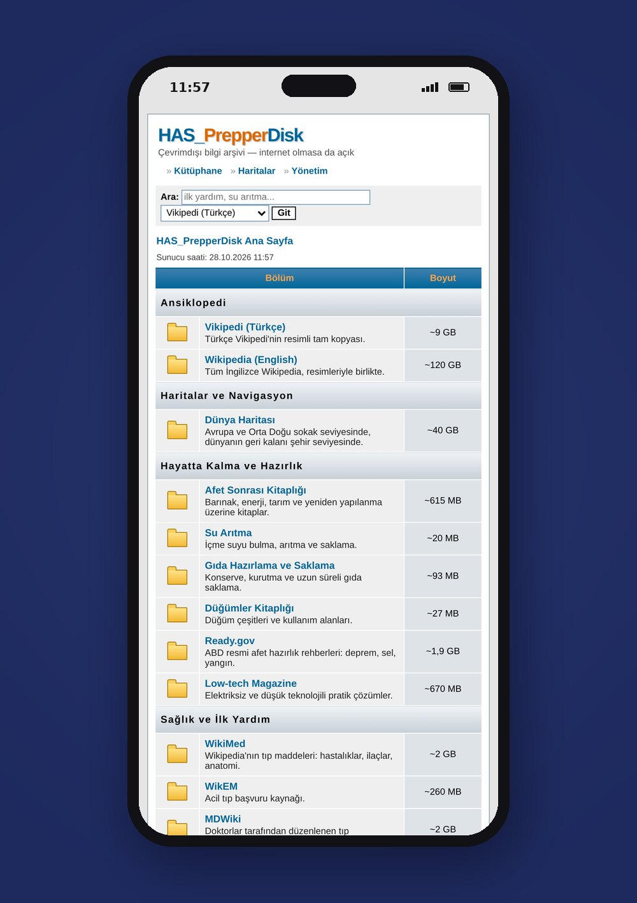

A Raspberry Pi 5 that carries Wikipedia, maps, medical references and survival books, and serves them over its own Wi-Fi. No internet, no cloud, no account.

A Raspberry Pi 5 with an M.2 HAT and an NVMe SSD. The operating system runs from the SD card, all content lives on the SSD. Kiwix serves Wikipedia and the rest of the library, OpenStreetMap tiles serve the maps, and a hotspot with a captive portal turns the Pi into a self-contained network.
One small box, six shelves:
The full English and Turkish Wikipedia with images, searchable without a connection.
Street-level OpenStreetMap for Europe and the Middle East, the rest of the world at city level.
WikEM, MDWiki, WikiMed, military field medicine and an A to Z guide to medicines.
Guides on water treatment, food preparation and long-term storage.
iFixit guides plus Q&A archives on home repair, gardening, ham radio and vehicle repair.
Join the Wi-Fi and the homepage opens on its own. Works on any phone, no app needed.